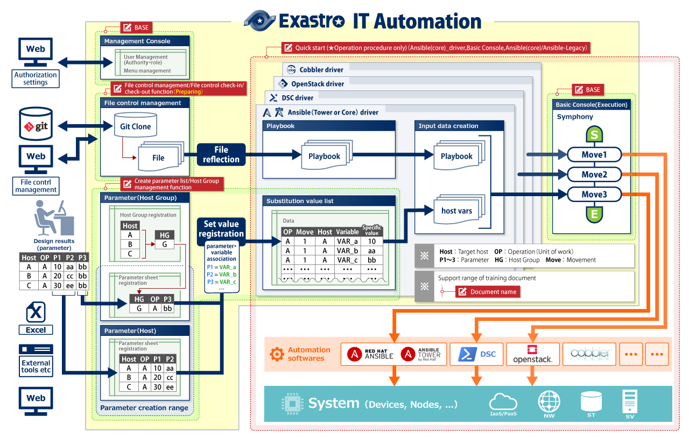
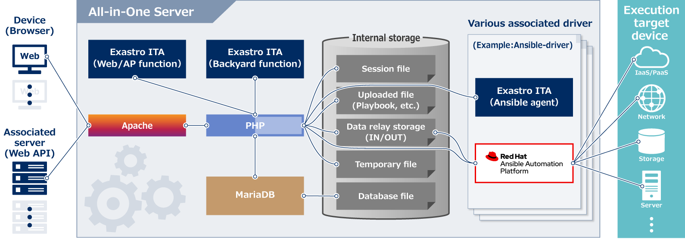
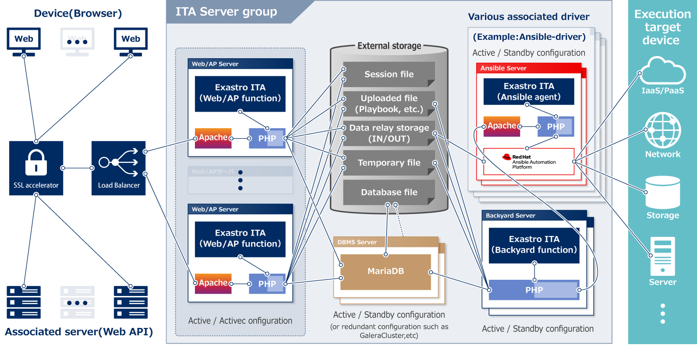

Exastro IT Automation Provided functions(Overall view)

Management Console function
User management (register, update, delete) and permission management (register, update, delete) by using ITA can be operated on the management console.
Import/Export of data managed by ITA is also operated on the management console.
File control management/File control check-in/check-out function
Manage Infrastructure as Code (IaC) in order to use automation software(OSS).
Backend is connected to Git and frontend provides management of file check-in/check-out status.
Basic console function
Basic console provides essential functions when working with ITA
- Register/Manage device information(device list).
- Create/Manage/Execute Symphony(workflow).
Drivers corresponding to each automation software
ITA suppports multiple automation software.
Provide every automation software an interface that controls IaC(Playbook, etc.).
Automation software operations can be confined to Movements (work unit) and linked into Symphony (workflow).
Parameter(Host/Host Group)
Central management / history management of system configuration (parameter of each host or host group).
Define parameter of manage target freely.
Associate parameter values with IaC(Playbook, etc.) parameters.
Exastro IT Automation Deployment example
Exastro IT Automation All-in-One Configuration

Exastro IT Automation High availability Configuration

Exastro IT Automation Installation
Exastro IT Automation has 3 types of installation: All-in-On(Online), All-in-One(Offline) and High availability(Manual).
See below for information on how to get started.
Exastro IT Automation All-in-One(Online)
This installation manual enables you to easily install Exastro IT Automation in your environment.
IT Automation can be installed on any operating systems that are compatible with Red Hat Enterprise Linux, and an Internet connection is required.
After installation is complete, by using the Quick Start guide below you can immediately experience IT Automation's powerful interface!
Exastro IT Automation All-in-One(Offline)
In some environments, you may not be able to communicate with the outside.
Even in such a case in order to use Exastro IT Automation, we will introduce the offline installation procedure.
Exastro IT Automation High availability(Manual)
Exastro IT Automation deploys all features on the same server all-in-one when installed using an online or offline installation procedure.
However, high availability deployment is often required for enterprises.
IT Automation can be constructed in an high availability(HA) configuration by allocating Web/AP functions and Backyard functions in distributed servers.
In manual installation, we plan to introduce the procedure of HA configuration.
Getting Started with Exastro IT Automation
Exastro IT Automation Quick start
This a quick start document to allow you to quickly familiarize yourself with the user interface of Exastro IT Automation. IT Automation controls multiple northbound automation softwares, such as ANSIBLE.
In this quick start document, ANSIBLE is selected as the automation software because of its broad scope.
In order to provide a smooth introduction, the functions listed below have been omitted from this quick start document, however, they are important features of IT Automation and their use is recommended to get the most out of the software.
- Manage parameters
- Link parameters to variables in IaCs
Coordination between Ansible with Exastro IT Automation
The hands-on of the Ansible association function will be released in near future.
Exastro IT Automation: Tutorial
Exastro IT Automation: Practice
Expected effects in cooperation with AnsibleTower

IT Automation gathers / manages configuration data and generates directory / configuration files that are necessary for Ansible to execute.
AnsibleTower secures inter-cluster communication and controls different version of AnsibleEngine.
AnsibleEngine is the Engine which runs Ansible playbook.
Combining all the features, the automatic construction system consist of IT Automation + AnsibleTower + AnsibleEngine can put efficiency increasing and labor saving into practice.